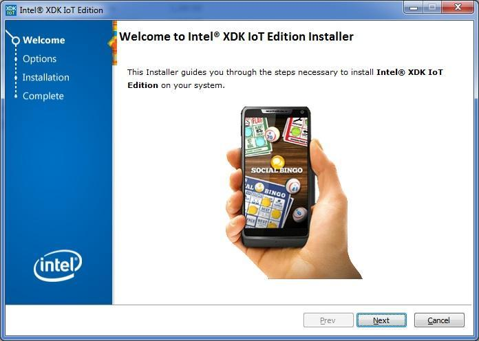

Step 1: Install Intel® XDK IoT Edition
Get the latest Intel® XDK IoT Edition installer for your computer’s OS. Simply run the installer and follow the prompts.

Using a 64-bit Windows computer?
Intel® XDK IoT Edition can be installed via the Windows 64-bit integrated installer. Refer to Set Up Your Computer - Windows (64-bit integrated installer) for more info.
- Get the latest Intel® XDK IoT Edition installer.
Hackathon attendees:
- On the USB key: files → [your OS]
- Copy the appropriate iot_web installer file to your computer: * Windows: iot_web_win_master[version].exe * Mac: iot_web_mac_master[version].dmg * Linux 32-bit: iot_web_linux32_master[version].tgz * Linux 64-bit: iot_web_linux64_master[version].tgz
Online option:
- Visit software.intel.com/en-us/html5/xdk-iot.
- Ensure that your OS platform is selected in the green download box, then click “Go!” to start downloading the installer.
On Windows
- Double-click on iot_web_win_master_[version].exe to start the installer.
On Mac
-
Double-click on iot_web_mac_master_[version].dmg to open the Apple Disk Image.
-
Double-click on the extracted xdk_full_[version].pkg to start the installer.
On Linux
-
Open Terminal.
-
Use the
cdcommand to go into the folder where the installer file is. For example:
cd ~/Desktop/
- Use the
tarcommand to extract the .tgz. For example:
tar zxvf iot_web_linux64_master_1912.tgz
(Note: Replace the filename shown below with your .tgz filename.)
- Go into the extracted folder, then run the installer shell file. For example:
cd iot_web_linux64
./install.sh
All platforms
After launching the Intel® XDK installer, follow the installation wizard and click “Next” where needed.
